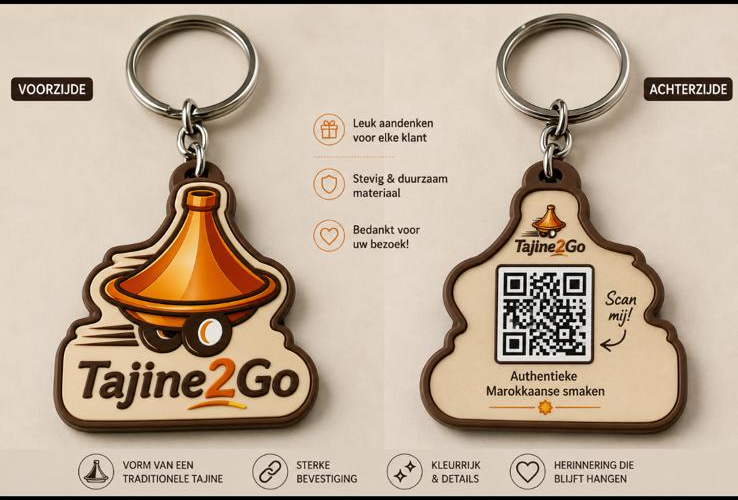
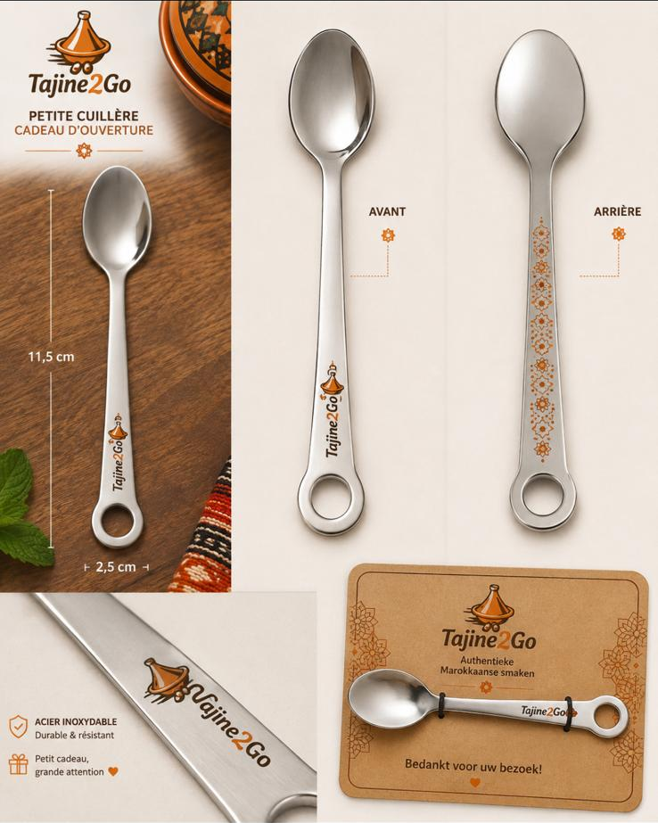
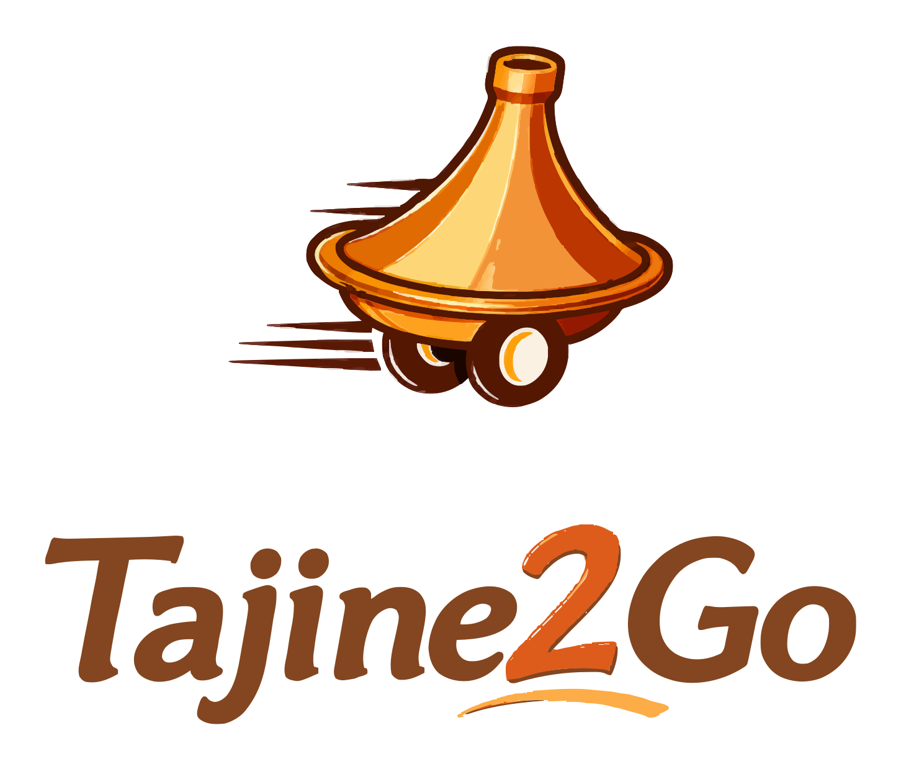
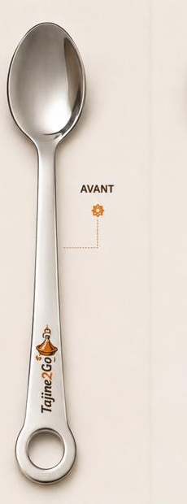
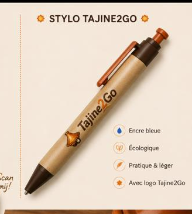
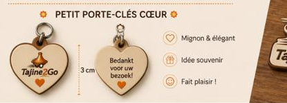
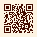
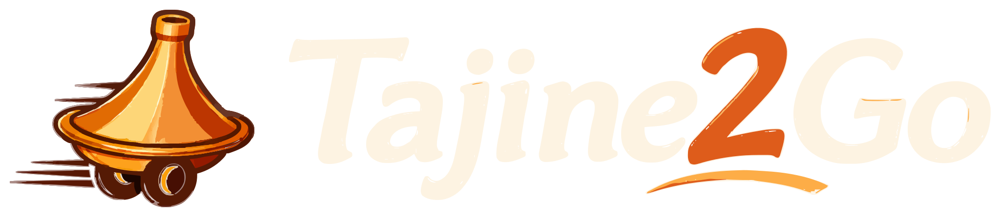

Sleutelhanger, lepelsleutelhanger, pen, hartsleutelhanger, QR-standaard en visitekaartje. Enkel bestaande merkelementen: de logo's, de QR-codes en het woord tussen lijnen. De QR-codes zijn exact overgenomen.
45 mm breed, contoursnede · gelaserd en bedrukt hout, ca. 3 mm dik · splitring van 25 mm. De vorm volgt de omtrek van het logo — tajine plus woordmerk — met een donkere rand rondom. Voorzijde het volledige logo, achterzijde de QR-code met de regel "Authentieke Marokkaanse smaken".

Drie punten. De QR op de achterzijde is een gegenereerde code in de mockup — vervang die door tajine2go-qr-ink-on-paper.svg, met de witruimte van vier vakjes rond de code. De contoursnede loopt vlak langs de letters van het woordmerk; vraag minstens 2 mm marge, anders snijdt de rand de o en de G aan. En de handgeschreven "Scan mij!" met het pijltje staat in een ander lettertype dan het merk: zet dat in Cormorant cursief, of laat het weg — de QR-code spreekt voor zich.
115 × 25 mm, roestvrij staal · ring aan het uiteinde voor de sleutelhanger · gravure op de steel, voor- en achterzijde · geleverd op een kraftkaartje van 100 × 70 mm met elastiek. Openingscadeau bij een bestelling.

De mockup hierboven is de aangeleverde referentie. De gravure erop is niet de juiste: hieronder staat de artwork zoals ze aan de graveur moet gaan.


positie op de steelDe gravure op de foto is de volle-kleurversie uit de mockup. Die moet vervangen worden door het horizontale logo in mono-espresso hierboven, op dezelfde positie en breedte: onderaan de steel, net boven de ring, ongeveer 22 mm hoog en gedraaid met de steel mee. Ik kan de bestaande gravure niet uit de foto weghalen — de leverancier krijgt de vector plus deze positieaanduiding.
Wat er verandert. De voorzijde krijgt het horizontale logo in mono-espresso in plaats van de volle-kleurversie: op geslepen staal valt kleur weg en één lijndikte graveert scherper. De achterzijde krijgt het boogmotief — vier kleine boogjes onder elkaar — in plaats van het bloemenpatroon, want dat laatste komt niet uit het merk. Op het kaartje staat het gestapelde logo. De copy is volledig Nederlands en de hartjes zijn weg.
Balpen met kraftpapieren huls · bruine clip, punt en drukknop · blauwe inkt · logo bedrukt op de huls, ca. 30 mm breed. Als openingscadeau en bij cateringleveringen.

Aanpassen. Het volledige kleurenlogo op kraftpapier verliest contrast — het crèmewitte woordmerk valt weg tegen de bruine huls. Gebruik hier tajine2go-horizontal-mono-espresso.svg, één kleur, of het woordmerk in papierkleur als de huls donker wordt gekozen. De opsomming in de mockup staat in het Frans met gekleurde iconen; op de pen zelf komt alleen het logo, de opsomming hoort op de begeleidende kaart en dan in één taal.
30 mm, hartvorm · gelaserd hout met splitring · voorzijde het logo, achterzijde "Bedankt voor je bezoek". Klein souvenir dat bij de rekening meegaat.

Let op de vorm. Het hart zit niet in de merkidentiteit en is het enige element in het hele systeem dat er niet uit voortkomt. Als je het wil houden, laat dan het losse hartje-symbool in de tekst weg — vorm en symbool samen wordt te veel. Een alternatief dat wel uit het merk komt: dezelfde maat in de boognisvorm, met het logo erin. Bij 30 mm is het volledige logo te klein om leesbaar te blijven; gebruik alleen het tajine-icoon op de voorzijde en het woordmerk in mono op de achterzijde.
74 × 105 mm (A6), staand — paneel 83 mm plus omgeslagen voet van 22 mm · 350 g karton met matte laminering, of dibond voor de toonbank. QR-code exact overgenomen uit tajine2go-qr-ink-on-paper.svg, met de verplichte witruimte van vier vakjes rond de code. De bestaande QR verwijst naar tajine2go.be; voor de socialvariant is een aparte QR nodig, die mag ik niet genereren.

tajine2go.be
85 × 55 mm, staand formaat liggend gebruikt · 400 g karton, mat, met blinddruk van het icoon op de achterzijde. Voorzijde in inkt met saffraangoud voor de lijnen — de enige plek waar die kleur mag. Achterzijde op papier, alle cijfers in Geist.

Openingsuren staan bewust niet op het kaartje: die veranderen, het kaartje niet. De QR leidt naar de site waar ze wel staan.